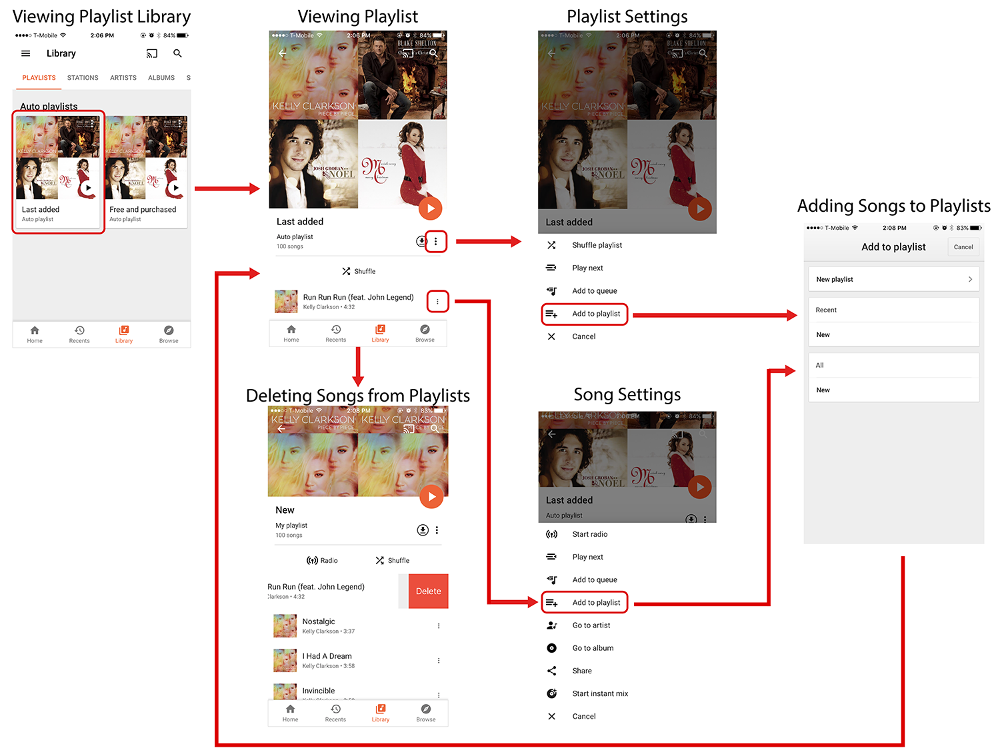
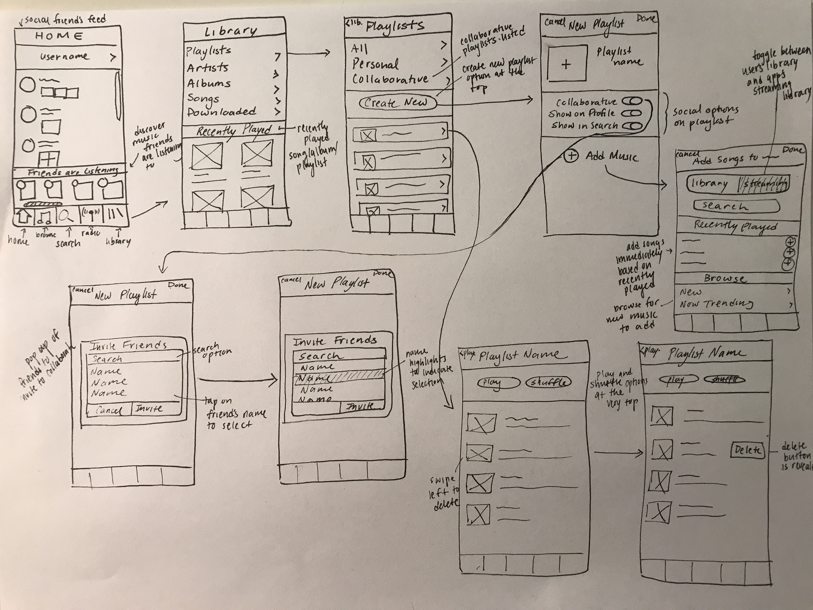

Muse-ic
A social music app that makes it easy to see what friends are listening to and supports playlist collaboration between friends.
My Role
Usability Researcher
UX Designer
Prototyper
Context
3 weeks
Nov 2017 - Dec 2017
Team of 4
Tools Used
User Interviews
Wireframes
Sketch
InVision
The Problem & Opportunity
As new songs are discovered and are favored and older songs are fallen out of favor, music become repeatedly skipped and/or overlooked when creating a new playlist.
How might we enable a user to more easily create new playlists, add or delete songs from a playlist, and manage their playlists?
User Interviews
We interviewed people from ages 18-25 who regularly listened to music on their phone, and we identified specific actions that tended to be pain points for users. We decided to attack the following issues in our redesign:
1. Following friend activity
People liked to see what their friends were listening to to find new music.
"My music app tends to be a relatively solitary experience, and I would like to know what my friends are listening to."
2. Create a new collaborative playlist
Friends who have the same taste in music want to be able to collaborate.
"I want to be able to make playlists with my friends because we are always listening to music together."
3. Delete a Song from a Playlist
Deleting is an important function that can often be hidden.
"I am continuously updating the songs on my playlist. It gets annoying if deleting a song is hard to do."
Competitive Analysis
We compared and contrasted existing music apps to analyze different work flows and pinpoint the strengths and weaknesses of certain design choices. We analyzed design choices for clarity, for ease of use, and for facilitation of user control.
Spotify:

Google Play Music:
Spotify: Spotify had a very complex workflow that frustrated a lot of users. For example, in order to delete a song from a playlist, they had to click on the playlist's settings icon, then another edit icon, and then they can finally delete the song form the playlist. Many Spotify functions would route the user through the playlist settings, adding additional steps that contributed to a lack of efficiency.
Google Play Music: Google Play Music is an example of a less effective workflow. In order to create a playlist, a user has to find a specific song first that they want to add to a playlist. This is a long and painstaking process to add many songs to a new playlist. However, deleting a song is intuitive. When a user swipes left, it reveals a button that allows a user to delete the song from the playlist.
Wireframing
We created a series of wireframing sketches in order to visualize the workflow and general layout of different pages a user would interact with.
Prototyping
For the initial design of the prototype, we made sure to include the ‘news feed’ on the Homepage of the app. Since this app is intended to be used socially, we decided to use a blue color scheme. Many social media platforms use blue. However, this design was was very utilitarian, and did not reflect the branding that we initially envisioned.
Because I had more time... A redesign!
There wasn't much aesthetic considered in the layout and the screen ended up relatively cramped. Therefore, we decided to redesign the pages. I rethought the color scheme and reimagined the app layout. The redesign address many of the initial problems I found in the first design. I spaced spaced objects further apart, maintained a consistent margin throughout the different pages, and I made button functionality clearer.
Reflection
I loved revisiting the design and improving upon it. I think that originally, the visual side of the update was something we had deprioritized because we were rushing to finish by a deadline. But, the visual component is just as important as the research and interaction side of the design. Together, the user research, experience, and visual components are what makes a design great.
I would have liked to conduct more research than just user interviews. While user interviews are great at digging into major pain points and bringing depth to a problem space, it does not have much generalizability since the sample size was small. I think by doing more research through methods like surveys and early prototyping would have made our solution more effective.